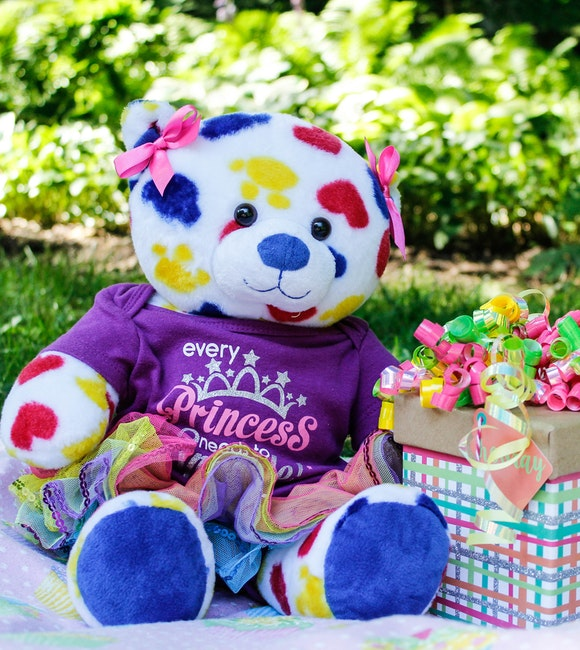
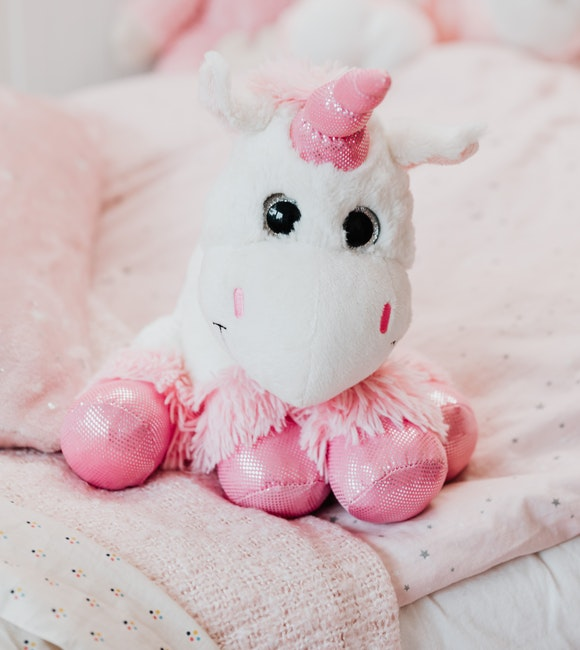

Estos peluches son muy adorables ala hora de abrazarlos brindaran un calido de apreton ya que son de esponja con mucha esponja
Tenemos la variabilidad de tener los grandes peluches y tambien pequeños para los bebe o niños dependiendo su gusto
Tenemos tambien estos peluches con muy buenas resistencias y tambien son calidos los peluches inflables sonmuy buenos dependiendo el uso que le den